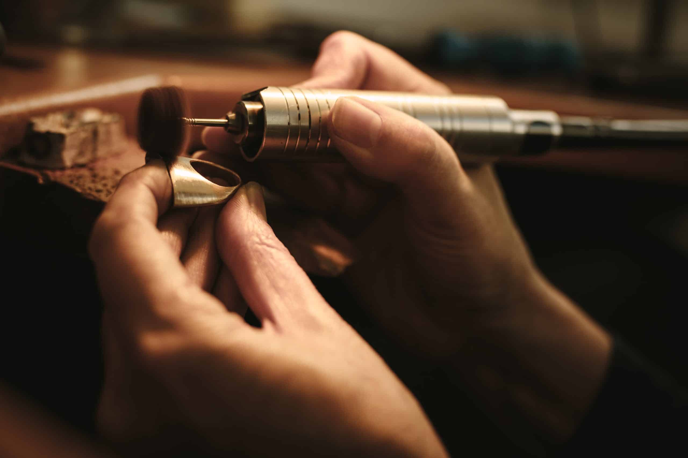

A jeweler and goldsmith is a skilled artisan who designs, creates, repairs, and sells jewelry and other precious metal items. Typical responsibilities include:
The work environment of a jeweler and goldsmith can vary. They may work in small independent workshops, large jewelry manufacturing companies, or retail stores. Their work can have a significant impact on society by providing individuals with meaningful and cherished pieces of jewelry for special occasions such as weddings, anniversaries, and milestones.
Citations: [Source 1] [Source 2]
Learn more about the career of a jeweler and goldsmith by clicking these interactive buttons: